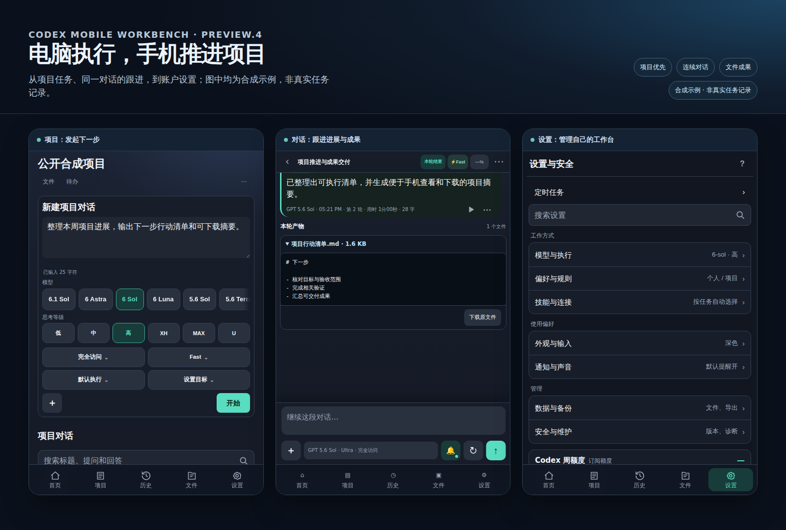

SELF-HOSTED · MIT · WINDOWS / WSL PREVIEW
电脑执行，
手机接着推进项目。
给自己电脑里的 Codex 一个手机浏览器 / PWA 入口：发任务、补要求、看进展，最后把文件带走。不是把远程桌面缩进手机，也不是换一个模型。
本页与演示完全静态，不连接工作台、模型或私人资料。演示不代表真实任务执行或实机验收。
公开版实际界面是什么样？
项目入口、同一段对话，以及自己的设置。点击图片可打开原尺寸查看。

先走一遍：资料 → 任务 → 文件
不必为了看懂流程，先装一套环境。演示使用固定读书笔记样例，下载的 CSV 也只在浏览器里生成。
1 · 关联样例
选择固定演示资料，不读取或上传你的文件。
2 · 模拟处理
查看模拟状态变化；不会调用 Codex，不消耗模型额度。
3 · 下载成果
取得合成 CSV，再模拟返回原任务，看看文件如何交付。
交互演示是流程示意，不是上方真实界面的可操作复制品，也不能用它验证真实断线恢复。
看懂以后，按自己的目的继续
只想安装使用
不需要先 Fork。当前发行版为 v0.1.0-preview.4：
- Windows + Ubuntu 24.04 WSL2，x86-64、Python 3.12。
- 安装器固定 Codex 0.160.0，需要自己的 Codex 账号。
- 手机可达的受信 HTTPS；电脑保持运行、联网。
- 模型服务费用自理，任务上下文可能发往模型服务。
想改成自己的工作台
MIT 许可允许修改与再分发。Fork 的用途是维护自己的版本，而不是给安装设门槛。
- 成果卡入门：只改 Excel 下载按钮的文案，并核对下载原件不变。
- 项目输入面板：从任务、附件与执行选项的排列入手。
- 主题与手机布局：按自己的阅读习惯调整。
请保留原许可与署名。是否启用 GitHub Actions 及其额度按自己的账户设置判断；修改后应运行相关验证。
实际使用案例与边界
从手机发任务，到一个 HTML 小工具的上线、反馈与回退：按维护者实际任务记录整理。案例中的业务工具不随安装包提供，自用界面也可能与公开版不同。
官方 Codex 也提供远程能力；这里侧重独立、自托管、可修改的项目工作流。执行能力受所选权限、原生审批和运行账户约束，不会因为加了手机入口就自动获得管理员权限。